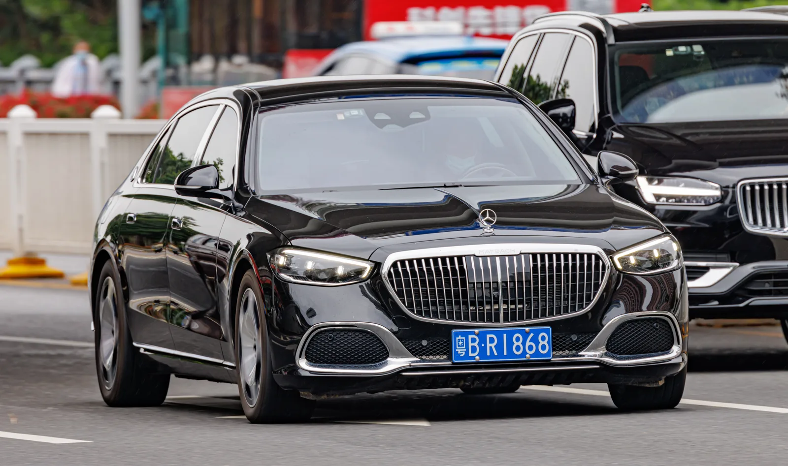

▲ 메르세데스-벤츠 S클래스. 신형은 부품의 절반 이상을 다시 설계했다
메르세데스-벤츠 신형 S클래스가 8월 18일 국내 공식 출시됐습니다.
가격은 1억5,400만~2억7,000만 원, 마이바흐 S클래스는 3억1,700만~4억700만 원입니다.
눈에 띄는 것은 변경 범위입니다. 벤츠는 차량 부품의 50% 이상, 약 2,700개를 다시 설계했다고 밝혔습니다. 통상적인 부분변경에서 나오는 숫자가 아닙니다.
1. 가격표부터
트림 구성과 가격을 정리하면 이렇습니다.
| 구분 | 트림 수 | 가격 |
|---|---|---|
| S클래스 | 6개 (S 350d 4MATIC ~ S 580 4MATIC 롱) | 1억5,400만~2억7,000만 원 |
| 마이바흐 S클래스 | 3개 (S 580, S 580 마누팍투어, S 680) | 3억1,700만~4억700만 원 |
진입 가격이 1억5,400만 원입니다. 최상위 마이바흐 S 680까지 가면 4억700만 원이니, 같은 이름 안에서 2억5,000만 원 이상 벌어집니다.
파워트레인은 직렬 6기통 디젤과 가솔린, V8 가솔린으로 구성되고 전부 48V 마일드 하이브리드가 결합됩니다. 마이바흐는 V8 4.0리터(S 580)와 V12 6.0리터(S 680)입니다.
V12가 아직 남아 있다는 점은 눈여겨볼 만합니다. 대부분의 브랜드가 12기통을 정리하는 중이고, 남은 곳도 한정 모델에만 씁니다.
2. "부품 2,700개"라는 숫자의 의미
벤츠는 이번 변경에서 차량 부품의 50% 이상, 약 2,700개를 재설계했다고 밝혔습니다.
이 숫자를 어떻게 읽어야 할까요. 자동차 한 대에 들어가는 부품은 통상 2만~3만 개로 이야기됩니다. 여기서 말하는 2,700개는 모든 나사와 클립까지 센 값이 아니라 설계 단위의 부품으로 보는 편이 자연스럽습니다.
그럼에도 절반 이상이라는 비율은 의미가 있습니다. 통상적인 부분변경은 외관 램프와 범퍼, 인포테인먼트 정도에서 끝납니다. 그 범위를 크게 넘어선 것입니다.
외관에서 확인되는 변화는 발광 그릴과 별 모양 리어램프입니다. 그리고 소프트웨어에서는 MB.OS가 새로 들어갑니다.

▲ 발광 그릴과 별 모양 리어램프가 외관에서 확인되는 변화다
3. MB.OS가 바꾸는 것
MB.OS는 벤츠가 자체 개발한 차량 운영체제입니다. 기존 MBUX가 인포테인먼트 중심이었다면, MB.OS는 주행·편의·인포테인먼트를 하나의 소프트웨어 구조로 묶는 방향입니다.
실질적인 차이는 업데이트에서 나옵니다. 기능별로 다른 제어기가 흩어져 있으면 무선 업데이트 범위가 제한되지만, 통합 구조에서는 차량 전반의 기능을 나중에 개선할 여지가 커집니다.
화면은 MBUX 슈퍼스크린으로 구성됩니다. 3개의 디스플레이가 들어갑니다.
여기서 짚어둘 대목이 있습니다. 벤츠는 대형 스크린 전략에 대한 비판을 받아왔고, 최근 물리 버튼을 되살리는 흐름도 함께 보이고 있습니다. 플래그십에서는 스크린을 유지하면서 아래 체급에서 조정하는 구도로 읽힙니다.
국내 사양에는 티맵 오토와 LG유플러스 라이브 TV+가 들어갑니다. 수입차의 내비게이션 불편이 오래 지적돼온 만큼, 체감이 큰 항목입니다.
4. 3개월 2,500대는 어느 정도인가
사전계약 실적을 보면 5월 18일 개시 후 4일 만에 1,000대, 3개월간 2,500대를 넘겼습니다.
1억5,000만 원부터 시작하는 차에서 이 속도는 가볍지 않습니다. 단순 계산으로도 계약 금액 합계가 4,000억 원을 넘습니다.
배경에는 국내 수입차 시장의 구조 변화가 있습니다. 최근 수입차 시장은 중간 가격대가 얇아지고 양극단이 두꺼워지는 흐름을 보여왔습니다.
즉 S클래스의 호조는 시장 전체가 좋아서가 아니라, 상단 수요가 몰리는 구조에서 나온 결과에 가깝습니다.

▲ 마이바흐 S클래스는 3억1,700만 원부터 시작한다. V12는 S 680에 남아 있다
5. 전 모델 후륜 조향
사양에서 눈에 띄는 것은 후륜 조향이 전 모델 기본이라는 점입니다.
S클래스는 전장이 5.2~5.5미터에 이르는 대형 세단입니다. 이 크기에서 후륜 조향은 선택 사양이 아니라 실용성의 문제에 가깝습니다. 지하주차장 진입과 유턴에서 체감 차이가 큽니다.
흥미로운 비교가 있습니다. 같은 날 공개된 C클래스 부분변경에서는 후륜 조향이 유럽 사양 옵션이고, 각도도 2.5도입니다. 체급에 따라 기본과 옵션이 갈리는 구조입니다.

▲ 마이바흐는 뒷좌석 구성이 실질적인 차별화 지점이다
마이바흐에는 뒷좌석 맞춤 사양이 추가됩니다. 쇼퍼드리븐 성격이 강한 모델이라 뒷좌석 구성이 실질적인 차별화 지점입니다.
6. 정리
신형 S클래스가 8월 18일 국내 출시됐습니다. 1억5,400만~2억7,000만 원, 마이바흐는 3억1,700만~4억700만 원입니다.
벤츠는 부품의 50% 이상, 약 2,700개를 재설계했다고 밝혔습니다. 발광 그릴과 별 모양 리어램프, 그리고 MB.OS가 주요 변화입니다.
전 모델 후륜 조향이 기본이고, 국내 사양에는 티맵 오토와 LG유플러스 라이브 TV+가 들어갑니다.
사전계약은 3개월간 2,500대를 넘겼습니다. 1억5,000만 원부터 시작하는 차라는 점을 감안하면 가벼운 숫자가 아니지만, 수입차 시장의 상단 쏠림이라는 맥락에서 함께 읽어야 합니다.